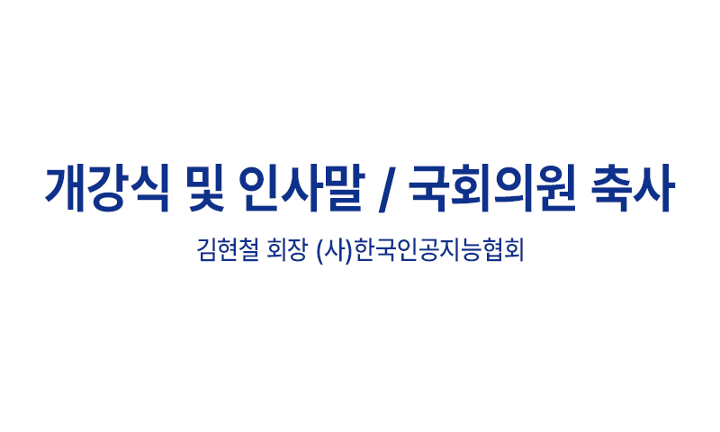
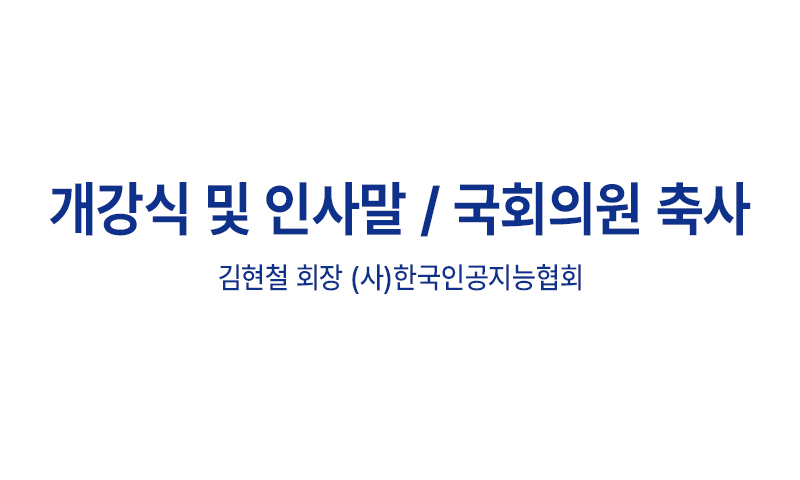
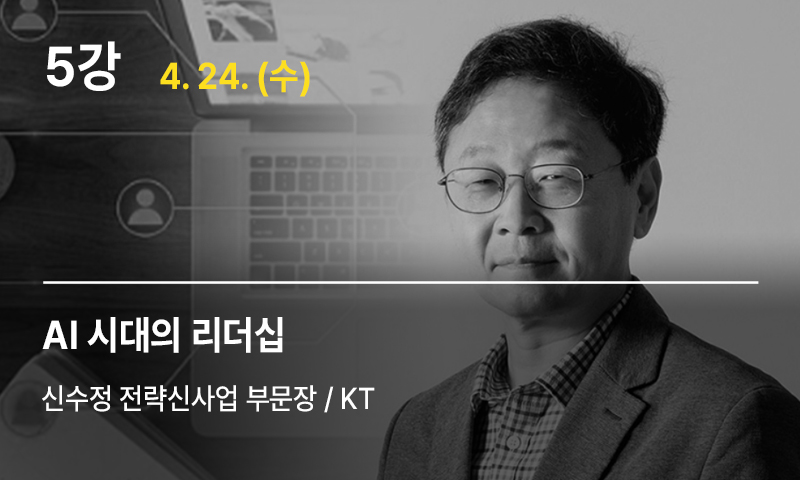
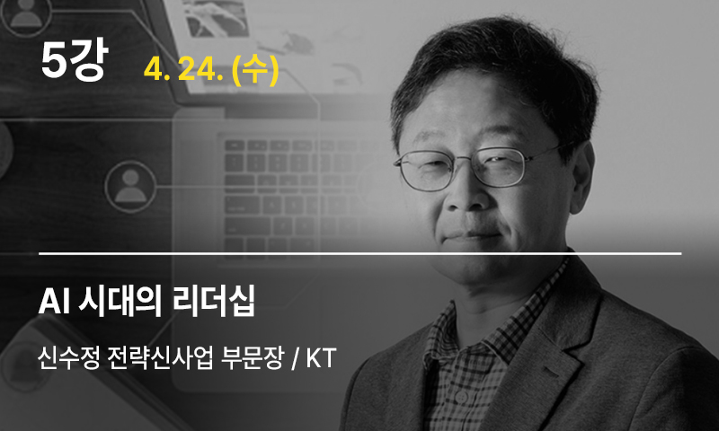
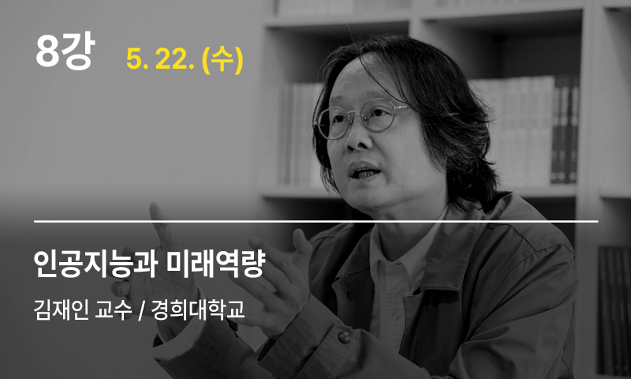
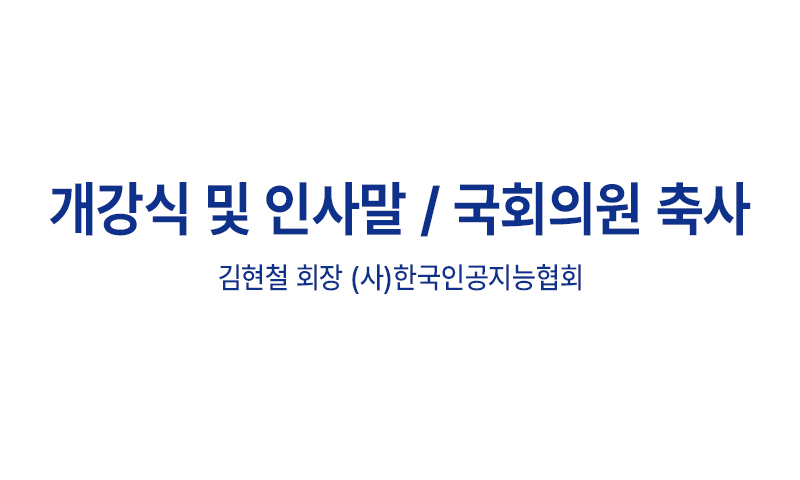
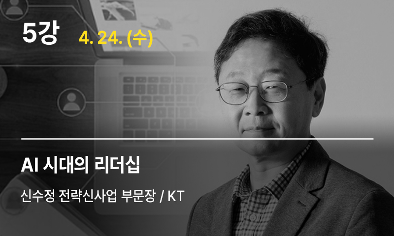

초거대 AI 활용 사례 및 기술 동향에 대한 특강
기업의 초거대 AI 적용 사례 및 지능화 전략에 대한 인사이트 공유
수요기업과 공급기업 CEO, 유관기관장 등 간의 정보 교류와 네트워킹
세부 커리큘럼
 



 




초거대 AI 활용 사례 및 기술 동향에 대한 특강
기업의 초거대 AI 적용 사례 및 지능화 전략에 대한 인사이트 공유
수요기업과 공급기업 CEO, 유관기관장 등 간의 정보 교류와 네트워킹

